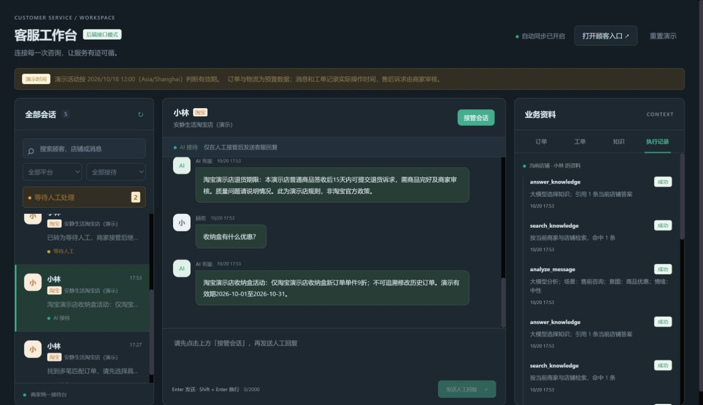

问物流，再问退货
打开顾客端，选择淘宝店和林小满，发送“查物流”。按提示选择订单，再发送“我要退货”，补充原因并确认创建演示工单。

打开顾客端，选择淘宝店和林小满，发送“查物流”。按提示选择订单，再发送“我要退货”，补充原因并确认创建演示工单。
保持顾客端打开，在商家工作台找到同一顾客。查看消息、订单、物流、工单，以及知识依据和执行记录。可切换抖店会话观察店铺区分。
顾客发送“转人工”，商家点击接管并发送人工回复。返回顾客端查看消息，再在商家端恢复 AI。刷新页面后演示记录仍保留。